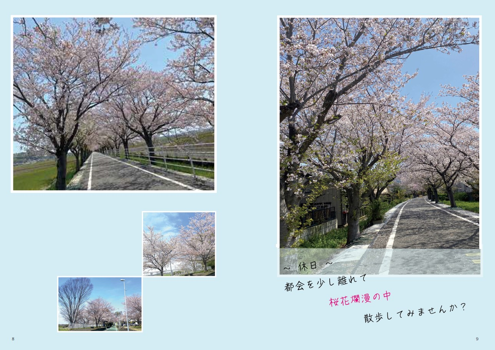
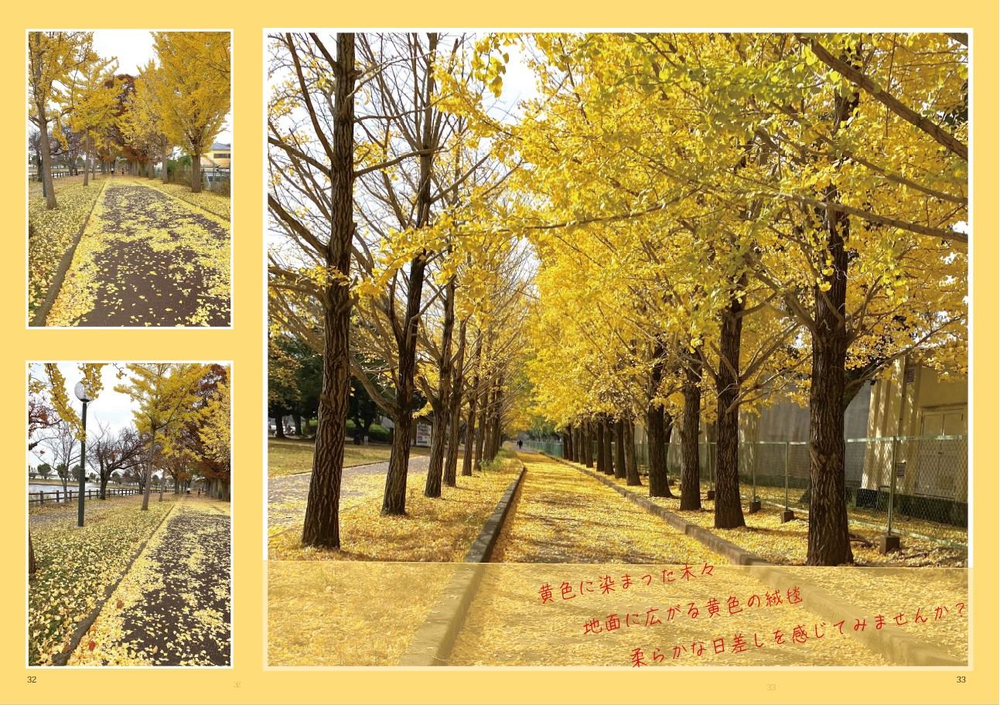
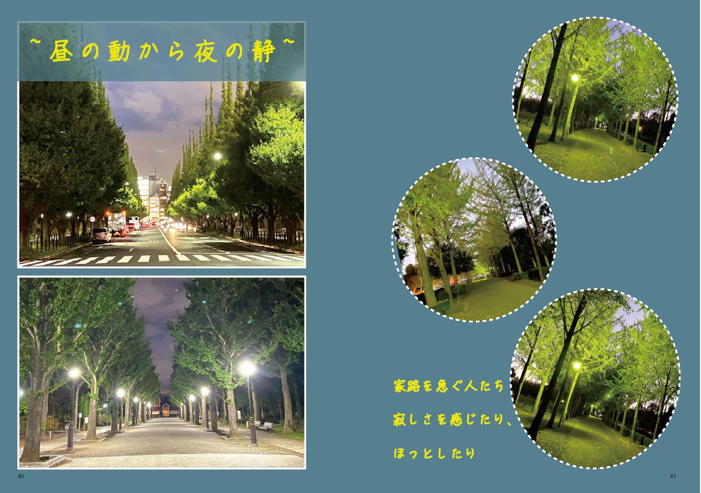

・トム・クルーズ主演のアクション映画シリーズ。テレビドラマ『スパイ大作戦』を基に1996年にシリーズが開始。
・変装の名人で圧倒的な作戦遂行能力をもつエージェント、イーサン・ハントとその仲間たちがチームを組み、世界の危機を救うため実現不可能な作戦（ミッションインポッシブル）に挑む。
・これまでに全7作品が公開されている。毎作品、トム・クルーズのスタントなしの超絶アクションが話題になっている。
VFXには頼らず、スタントマンを使うこともなく、トム・クルーズ本人が命がけでやるハードアクション＆スタント
ストリート・カーレースに大金を賭ける若者たちが、夜な夜な集まるロサンゼルス。
その中でも一目置かれる凄腕ドライバー、ドミニクにレースを挑んでくる無謀な連中を相手に、彼は1レースで１万ドルを稼ぎ出す！
そんなある日、驚異のドライビング・テクニックを持つブライアンが無敵のマシーンとともに現れドミニクに勝負を挑むことになる！
彼は、多発している高級品を積んだトラックが改造スポーツカーに次々と襲われるという事件を追って、潜入捜査を行っていたのだった。
大迫力の規格外カーアクション
超高級スーパーカーや世界中のヴィンテージカーが登場
フランクは、ワケありの品を報酬と引換えに運ぶ、プロの運び屋＝トランスポーター。
彼には自らに課した３つのルールがある。
１）契約厳守
２）名前は聞かない
３）依頼品を開けない
ルールを１つでも破れば、＜死＞
ところが、あるデリバリーの途中、彼は依頼品を開けてしまう。そこで目にしたのは、ひとりの美しい女だった。
全編で繰り広げられる壮絶なカー･チェイスと銃撃戦！スリルとアクションがフル･スロットルで加速する！
フランク・マーティン（ジェイソン・ステイサム）の演技
フランクの冷静沈着なキャラクターと、時折見せる人間味ある優しさのギャップが魅力的
街を歩けば、どこかしらに佇む街路樹。
四季折々にその姿を変え、私たちに安らぎや美しさを与えてくれるこれらの木々は、日常の中にあって気づかれにくい存在かもしれない。
この雑誌では、そんな街路樹の魅力を新しい視点で多角的にご紹介したい。
「静と動」
「晴と雨」
「平日と休日」
「朝と昼と夜」
「春夏秋冬」
「落葉樹と常緑樹」
「花が咲く、咲かない」
「若木と老木」
と場面によって様々な姿に変化する。
本誌を通して、普段あまり意識しない街路樹に目を向け、街の美しさを、様々な視点から再発見していただければと思う。
皆さんもぜひ、この雑誌を通じて街路樹の魅力に触れ、いつもの街並みが少し違って見えるような、そんな新しい視点を楽しんでみてください。
  